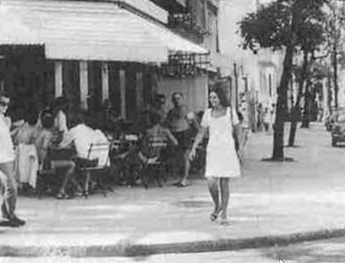

class: center, middle # Pjesme o djevojkama ### glazbeni kviz --- class: center, middle # Elizabeta --- John Kurlander je zvučni inženjer, danas vjerojatno najpoznatiji po radu na filmskoj trilogiji Gospodar prstenova, za koje je dobio tri Grammyja. <img class="center" src="kurlander.jpg"> No bio je tek srednjoškolac na školskom izletu kad je prvi posjetio EMI Studios. Bio je toliko očaran da ih je pitao za posao. Na njegovo veliko iznenađenje, oni su pristali. I tako je postao pomoćni inženjer na novom albumu za domaći bend. <em class="center">Kako se zvao taj album? (10)</em> --- ## Iznenadni akord Članovi benda su upravo završili s preslušavanjem snimki i krenuli komentirati, kad je odjednom iz zvučnika bučno zazvonio akord: <audio controls class="center"> <source src="./akord.mp4" type="audio/mpeg"> </audio> John se prestravio. Tu snimku mu je pjevač rekao da je baci, no Johnu su šefovi rekli da nijednu snimku benda ne smije baciti. Zato ju je zalijepio na kraj trake, iza 20-ak minuta tišine. Zvonki akord je ustvari bio završetak prethodne pjesme u nizu, jedne o gospodinu Senfu. <em class="center">Kako se zvala pjesma? (8)</em> --- ## Skriveni i trapavo izrezani ostatak Iznenadna pjesma traje samo 23 sekunde. Naglo završava jer joj je zadnja nota ostala prerezana u snimci o djevojci koja se oblači u polietilenske vreće. Autor pjesme (koji će se na naslovnici albuma pojaviti bosonog) kasnije je rekao: > _Naša cijela karijera bila je takva, pa i priliči da je tako i završila._ <em class="center">Kako se zvala pjesma? (7)</em> --- ## Prva skrivena pjesma Članovi benda su skočili, pogledali jedni druge, pogledali njega... i rekli "To!". Odličan efekt iznenađenja. Ne samo da su ostavili takvu u finalnoj verziji albuma, nego je čak nisu niti naveli u originalnom popisu pjesama. Bila je to prva skrivena pjesma u povijesti roka. <em class="center">Kako se zvao taj album? (6)</em> <audio controls class="center"> <source src="./HerMajesty.mp3" type="audio/mpeg"> </audio> <em class="center">Kako se zove pjesma? (2)</em> --- 1929\. godine Gramophone Company je kupio jednu kuću koju je dao preurediti u prvi namjenski studio za snimanje glazbe u svijetu — ili se bar tako hvale. Kad je firma kasnije postala Electric and Musical Industries, studio se službeno nazvao "EMI Recording Studios". <img class="center" src="emi-entrance.png"> U njemu su, između ostalih, snimali Pink Floyd, Radiohead, Oasis, Kanye West, Amy Winehouse, Ed Sheeran, Lady Gaga i Adele. <em class="center">Kako se zove album? (3)</em> --- No studio su svi zvali po ulici u kojoj se nalazio. Na naslovnici našeg albuma je samo fotografija ulice, bez naziva albuma i bez naziva benda, no svejedno je jedna od najpoznatijih naslovnica albuma svih vremena. Pješački prijelaz na naslovnici je toliko opsjednut turistima da je lokalna vlast iskoristila nedavni _lockdown_ da ga friško preboji. <img class="center" src="abbeyroad.jpg"> <em class="center">Kako se zove album? (1)</em> --- class: center, middle # Heloiza --- ## Djevojka iz Crnogorske ulice  17-godišnja Heloiza živi u Crnogorskoj, i često se spušta do kafića na uglu da mami kupi cigarete. <em class="center">Kako se zove pjesma koju je inspirirala Heloiza? (10)</em> --- Tamo sjede skladatelj Tom i pjesnik Vinicius. Piju pivu i gledaju zgodne djevojke koje prolaze. Pogotovo se dive Heloizi, koja ih inspirira za novu pjesmu. <img class="center" src="TomVinicius.png"> Crnogorska ulica će se kasnije nazvati po Viniciusu. --- <img class="center" src="mascots.png"> Po njima dvojici ime će kasnije dobiti i maskote olimpijskih igara. <em class="center">Kako se zove ta pjesma? (8)</em> --- Pjesma je postigla međunarodnu popularnost na albumu "Getz/Gilberto", prvi jazz album koji je dobio Grammyja (i jedini do 2008.). Gilbertova supruga Astrud, koja nikad nije profesionalno pjevala i bila je u studiju samo da pravi društvo mužu, snimila je na njegov nagovor englesku verziju. Danas se smatra da je to po broju različitih snimki druga najpopularnija pjesma na svijetu. --- class: center, middle # Claudette --- Udala se kad je imala samo 16 godina, no taj brak je bio pun problema. Dok je muž bio na turneji, Claudette ga je varala s radnikom koji je gradio njihovu kuću. Stoga ju je sljedeći put poveo sa sobom, na turneju po Europi s Beatlesima, no ni to nije pomoglo. Zbog nevjera su često prekidali, a zatim se i razveli, samo da bi se godinu dana kasnije ponovno vjenčali. --- Claudette je voljela motore. Njenog muža je na motore navukao Elvis Presley. Često su sudjelovali na raznim utrkama. Vraćajući se na motoru s jedne takve utrke doživjela je nesreću. Umrla je mužu u naručju. Imala je tek 24 godine. <em class="center">Kako se zove ta pjesma? (8)</em> --- Muž je jedan dan radio s koautorom Billom Deesom. Claudette ih prekinula samo da kaže kako izlazi van, na što ju je muž pitao ima li novaca. Bill je umjesto nje odgovorio: "Lijepoj ženi nikad ne trebaju novci!" Nakon 40 minuta su imali gotovu pjesmu, koja je tjednima zauzimala vrh američkih i britanskih top-lista. <em class="center">Kako se zove ta pjesma? (8)</em> --- Po toj pjesmi je nazvana i popularna romantična komedija iz 1990. s Juliom Roberts u naslovnoj ulozi.